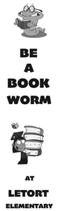

Scott Sauer Portfolio for AENG 110 |
||
| Home Photography Project Print Project Infographic Project Video Project | ||
|  |
In this project we created a bookmark for a local elementary school. We designed it using clipart and the program indesign. After, designing we created a metal plate so that we could use the schools lithographic printing press. When it came to printing, we put the ink into the top of the press, wet the rollers, and loaded the metal plate in. After it was all set up and ready to go we ran through 75 sheets in what was a fast process. The final thing we did was cut them out to a final size of 2" x 8" using a cutting press to do all the sheets at one time. |
|
| Home Photography Project Print Project Infographic Project Video Project | ||
© 2024 Scott Sauer |
||